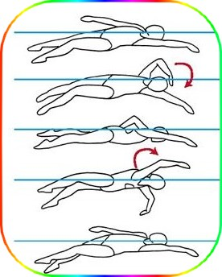

تمرین های دست کرال پشت
Backstroke Arm Stroke Drills
از میان بسیاری از باورهای غلط در مورد ضربه پشت بازو ، رایج ترین آن این است که بازوها در طول استروک مستقیم مانند آسیاب بادی صاف می مانند. استروکسکته مستقیم بازو اغلب با مشکلات شانه همراه است. این کار نیز دشوار است ، مانند اینکه بخواهید خود را با بازوهای صاف از استخر بلند کنید. در حالی که شروع و اتمام استروک با بازوهای صاف ، کاملاً مرتب و با استفاده از موقعیت آرنج خمیده و محکم ، در اواسط استروک ضروری است ، به شناگر اجازه می دهد تا به قدرت بیشتری دسترسی پیدا کند و با کشش شتابان به جلو حرکت کرده و سپس فشار دهید عمل. هدف از تمرینات زیر بازویی برای ضربه پشت ، یادگیری کارآمدترین مسیر استروک زیر آب برای یک استروک راحت تر ، موثر و شانه آور است.
کشیدن / فشار دادن یک بازو
One Arm Pull/Push
-
اهداف این تمرین
- یادگیری مسیر بازوهای کرال پشت
- احساس کشش و فشار
- غلتیدن به داخل و خارج از هر استروک

-
چطور تمرین را انجام دهیم
- در آب شناور شوید ، رو به بالا ، ستون فقرات صاف باشید ، خط آب خوبی داشته باشید ، با لگد زاینده ، در حالی که یک بازو در کنار شماست و دست دیگر را روی سر خود کشیده ، با شانه تراز کنید.
- استروک خود را با پایین کشیدن دست درازنده خود در حدود دوازده اینچ مستقیم به داخل آب شروع کنید ، ابتدا انگشت صورتی رنگ را ایجاد کنید ، و اجازه دهید شانه و لگن مخالف همزمان بلند شوند. از دوازده اینچ عمق ، در حالی که آرنج کاملاً بی حرکت است ، نوک انگشتان و کف دست خود را به سمت بالا حرکت دهید تا آب را به سمت پاها فشار دهید. دست خود را تا ارتفاع شانه خود جارو کنید ، به طوری که بازو به زاویه قائم نزدیک شود. به درستی انجام شده است ، باید احساس کند که بازو دور آرنج شما می چرخد. این قسمت کشش بازوهای کرال پشت است.
- از آن مرحله ، بازوی خود را با یک جارو سریع صاف کنید تا جایی که دستتان در زیر ران قرار گیرد ، در حالی که نوک انگشتان به سمت پاها قرار دارد. اجازه دهید تمام بازوی شما درگیر این جارو شود. در همان زمان ، باسن سمت راست خود را به سمت بالا بچرخانید تا به قدرت این عمل کمک کنید. این قسمت فشار بازوهای کرال پشت است.
- بازوی خود را بر روی آب بازیابی کرده و مسیر بازوی عقب را با همان بازو تکرار کنید. توجه داشته باشید که دست شما در حال ردیابی نوعی شکل S در کنار بدن شما است. منحنی بالا کشش است ، منحنی پایین فشار است. این شکل S می تواند بارزتر شود زیرا با شانه و لگن رول خود را به منحنی بالا و با شانه و لگن از منحنی پایین خارج می کنید. تا انتهای استخر ادامه دهید.
- تمرین را تکرار کنید ، سرعت خود را سریع کنید و دست خود را به سمت مفصل ران تسریع کنید. آرنج خود را محکم بگیرید. از هر ضربه بپیچید و رول کنید. سعی کنید انتقال بین فشار و فشار را شناسایی کنید. برای چندین طول ادامه دهید ، سپس بازوها را تغییر دهید.
بالا و بیش
Up and Over
-
اهداف این تمرین
- احساس مسیر بازوهای کرال پشت
- حفظ موقعیت آرنج پایدار
- گرفتن آب عمیق

-
چطور تمرین را انجام دهیم
- برای کرال پشت ، از دیوار خارج شوید ، هر دو بازو روی سرتان کشیده شوند. به یک ستون فقرات مستقیم ، هسته محکم و خط آب خوب برسید. یک ضربه مفید ایجاد کنید. ضربه بازوی پشت را با بازوی راست خود شروع کنید و بازوی چپ خود را در حالت کشیده بگذارید.
- با چرخاندن همان شانه کناری و لگن به سمت پایین و شانه مقابل و باسن بالا ، دست راست خود را در حدود دوازده اینچ پایین آب قرار دهید. همانطور که دست شما به عمیق ترین نقطه خود رسید ، یک مشت آب بگیرید. با حفظ حالت آرنج پایدار ، مشت آب خود را در قوس بالا و بالای آرنج خود حرکت دهید.
- در بالاترین نقطه قوس ، انگشتان شما باید به سمت بالا به سمت سطح آب باشند ، اما سطح را نمی شکند. در انتهای قوس ، بازوی شما باید در امتداد کنار بدن راست باشد و نوک انگشتان باید به سمت پاها باشد.
- همانطور که بازوی راست شما از لگن از آب خارج می شود و بر روی آب به موقعیت اولیه خود بازمی گردد ، همان مسیر را با بازوی چپ خود دنبال کنید. باسن و شانه چپ را به سمت پایین بچرخانید و باعث شوید تا دست چپ شما به عمق حدود دوازده اینچ برسد. آب عمیق را بگیرید و دست خود را به سمت بالا و بالای آرنج خود در یک قوس که با بازوی راست در کنار شما قرار دارد ، جارو کنید.
- با بازوهای متناوب به نوازش ادامه دهید. آب را عمیق بگیرید و آن را نگه دارید زیرا دست شما با هر ضربه قوس بالا و بالای آرنج را می یابد. قوس را با سرعت بیشتری ردیابی کنید. احساس کنید بدن شما با هر بار ضربه به جلو می رود. برای چندین طول استخر تمرین کنید.
کرال پشت با دست مشت
Fist Backstroke
-
اهداف این تمرین
- یادگیری احساس آب با ساعد
- استفاده از آرنج پایدار و بلند
- قدردانی از نقش دست

-
چطور تمرین را انجام دهیم
- برای کرال پشت از دیوار خارج شوید. قبل از اولین ضربه ، با هر دست مشت بسته ای ایجاد کنید.
- شروع به استروک کنید. در ابتدا ممکن است پیشرفت بدون روبروی دست باز خود غیرممکن به نظر برسد. به استروک ادامه دهید ، بازوی خود را به طور عمدی قرار دهید تا بازو به عنوان دست و پا زدن شما برای فشار دادن به آب کار کند. برای این کار لازم است که با حرکت دادن مشت و بدون حرکت آرنج ، استروک را شروع کنید و در حالی که مشت از کنار آن عبور می کند ، آرنج را بالا و ثابت نگه دارید.
- از کل طول ضربه ، بالا به پایین استفاده کنید. احساس کشش و فشار کنید. استروک زیر آب را تسریع کنید. مخالفت را حفظ کنید. استروک خود را با دست و پا زدن بی دست وفق دهید. به انتهای دیگر استخر ادامه دهید.
- حالا دوباره فشار دهید ، این بار با دستان باز. شنای منظم پشت را انجام دهید ، با استفاده از دست و همچنین بازو برای فشار بر روی آب استفاده کنید. یک آرنج و آرنج را بالا نگه دارید. احساس کشش و فشار کنید. استروک خود را تسریع کنید. مخالفت را حفظ کنید.
- تغییر طول مشت و دست باز را ادامه دهید تا جایی که آب را با یک دست و پا زدن که هم شامل دست و هم ساعد است احساس کنید.
چوب پنبه
Corkscrew
-
اهداف این تمرین
- رسیدن به عمق برای شروع استروک
- احساس چرخشی که شروع به ضربه بازو می کند
- استفاده از بازوی خم شده در اواسط کشش مشابه سبک آزاد 
-
چطور تمرین را انجام دهیم
- در حالی که بازوها را کشیده اید ، از پشت به دیوار ضربه بزنید. به یک ستون فقرات مستقیم و خط آب خوب برسید. به طور مولد لگد بزنید.
- با بازوی چپ خود یک ضربه بزنید. در حالی که بازوی چپ به پهلو می رسد ، با بازوی راست خود شروع به استروک کنید در حالی که بازوی چپ شما روی آب شروع به بهبودی می کند.
- هنگامی که بازوی راست شما به اواسط بهبودی نزدیک می شود ، بازوی چپ شما باید به عمیق ترین نقطه زیر آب رسیده باشد. شانه و ران بازوی بهبود یافته شما باید حداقل تا حدی از آب خارج شود و شانه و ران بازوی نوازشگر شما باید در آب کم باشد.
- در این مرحله ، بهبودی خود را دوباره به سمت شانه مخالف خود هدایت کنید و بدن خود را به سمت عقب حرکت دهید ، به حالت شناور جلو. دست در حال بهبودی شما باید به مثل شنا آزاد وارد آب شود.
- شروع به استروک با سبک آزاد کنید زیرا بازوی کنار شما شروع به بازیابی به عنوان سبک آزاد می کند. باید دوباره در کنار خود شناور باشید و در اواسط بهبودی ، بازوی بیش از حد آب خود را هدایت کنید تا به عنوان ضربه پشت وارد آب شود.
- حرکت در آب را ادامه دهید ، یک حرکت را به صورت پشت و دیگری را به سبک آزاد انجام دهید. عمقی را که بازوی شما برای شروع هر ضربه به پشت خود کسب می کند ، احساس کنید. در هنگام کشیدن میانه به حالت آرنج خم شده مشابه بازوها در هر دو حرکت توجه کنید. احساس کنید چگونه غلت خوردن به سمت بازوی نوازشگر شما به قدرت بیشتری برای استروک دسترسی پیدا می کند.